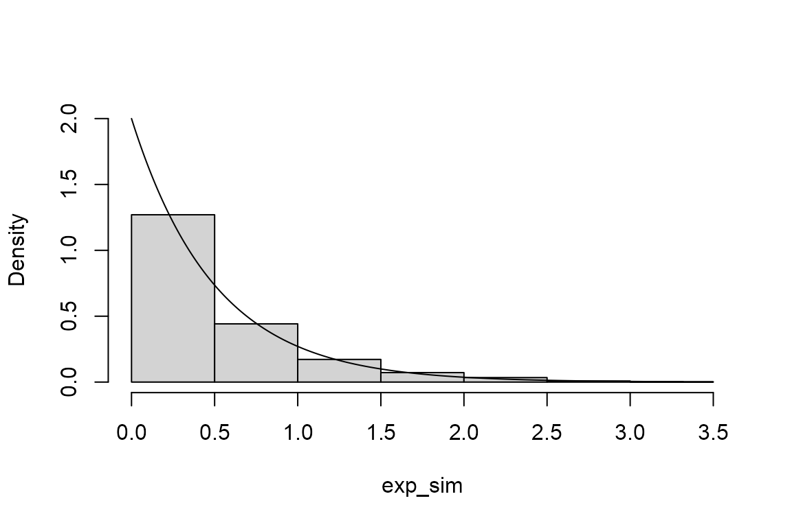
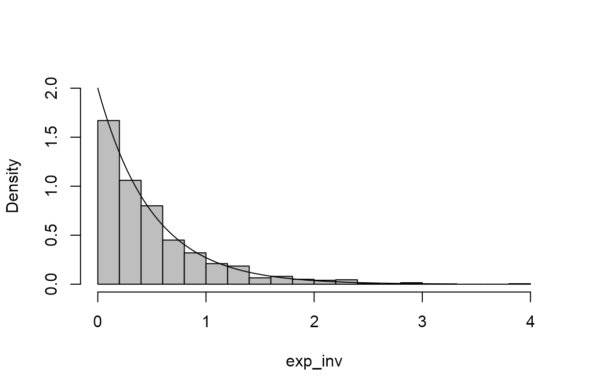
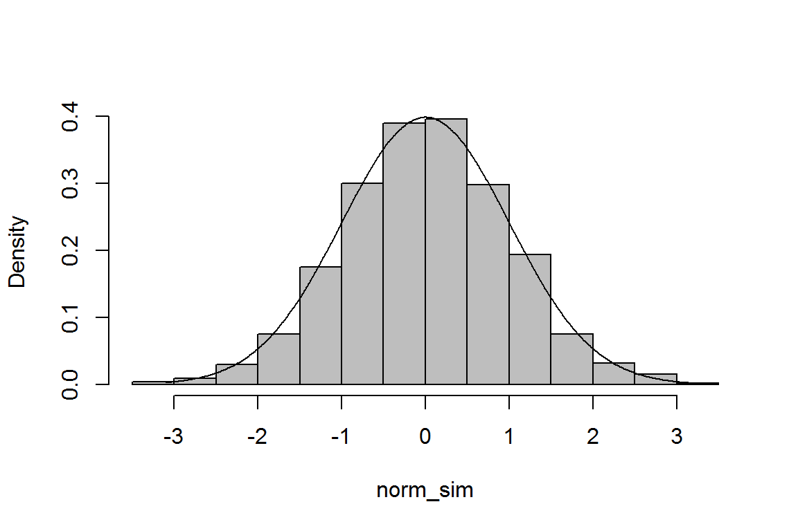
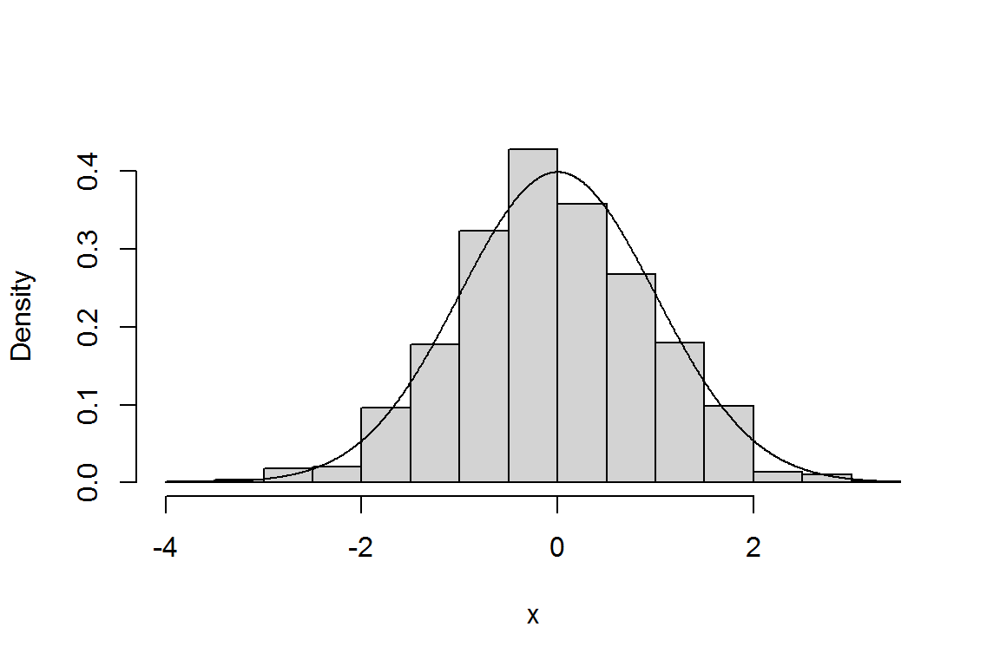
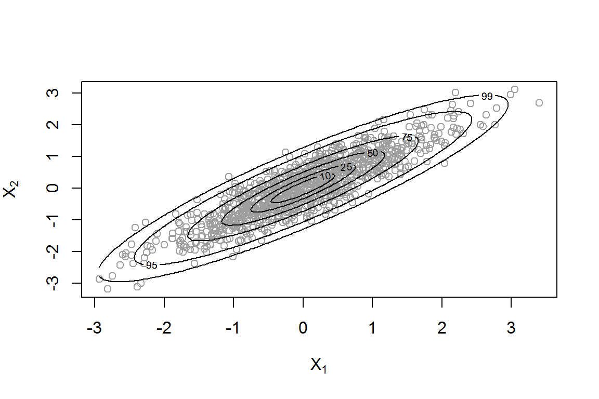

Chapter 1: Stochastic Simulation
Paul Northrop
Source:vignettes/stat0002-ch1b-stochastic-simulation-vignette.Rmd
stat0002-ch1b-stochastic-simulation-vignette.RmdStochastic simulation uses computer-generated pseudo-random numbers to mimic a stochastic real event or dataset. Pseudo-random numbers are not random (they are produced by an algorithm) but the algorithm is constructed in order to imitate randomness closely enough. A typical use of stochastic simulation is to generate numbers that behave approximately like a random sample from an particular probability distribution.
In this vignette we concentrate on using R to perform stochastic simulation. If you want to know more then good sources of information are Morgan (1984) and Jasra (2011).
The function rbinomial can be viewed by typing
rbinomial at R command prompt >.
Pseudo-random numbers in (0,1)
The basic building block of stochastic simulation methods is the
ability to simulate numbers (pseudo-) randomly from the interval (0,1).
As we will see in Chapter 5 of the STAT0002 notes this is equivalent to
generating numbers that behave approximately like a random sample from a
standard uniform U(0,1) distribution. The function in R that does this
is runif.
Simulation from a binomial distribution
In the Challenger Space Shuttle disaster vignette we needed to simulate numbers from a binomial distribution with parameters \(6\) and \(p\), for a given value of \(p\). As we will see in Chapter 5 of the STAT0002 notes this distribution arises as the number of ‘successes’ (perversely, in the space shuttle example thermal distress of an O-ring is a ‘success’) in a fixed number (here, this is 6) of independent trials, where each trial results either in a ‘success’ or a ‘failure’.
Suppose that \(p=0.2\), which is the approximate estimated probability (under a linear logistic model) that an O-ring suffers thermal distress when the space shuttle is launched at 58 degrees Fahrenheit.
The function in R that simulates from a binomial distribution is
rbinom.
- Can you see the convention in the way that R’s simulation functions are named?
Underlying rbinom is an algorithm that works quickly
even in cases where the number of trials (size) is large.
With a small number of trials, like 6, we could work more directly,
using numbers produced by runif to assign the result of
each trial to ‘success’ or ‘failure’. This is like tossing a coin that
is biased so that ‘heads’ is obtained with probability 0.2. The function
rbinomial below simulates one value from a
binomial distribution with parameters size and
prob. Use ?rbinomial to view the help file.
This function is less general and less efficient than
rbinom. However, it is useful to illustrate a simple way to
simulate from a binomial distribution and as an example of how we can
write our own R functions to perform calculations.
rbinomial <- function(size, prob) {
# Simulate size values (pseudo-)randomly between 0 and 1.
u <- runif(size)
# Find out whether (TRUE) or not (FALSE) each value of u is less than prob.
distress <- u < prob
# Count the number of TRUEs, i.e. the number of successes.
n_successes <- sum(distress)
# Return the number of successes.
return(n_successes)
}We simulate one value from a binomial(6, 0.2) distribution. [We use
set.seed to initialize the pseudo-random number sequence in
a particular place. This will enable us to repeat these calculations
below using exactly the same random numbers.]
- Can you work out what is happening in each line of the code
inside
rbinomial? The following should help.
> set.seed(1826)
> size <- 6
> prob <- 0.2
> u <- runif(size)
> u
[1] 0.3561567 0.9131876 0.5627795 0.1879185 0.3193222 0.6738423
> distress <- u < prob
> distress
[1] FALSE FALSE FALSE TRUE FALSE FALSE
> n_successes <- sum(distress)
> n_successes
[1] 1- The effect of
sum(distress)is quite subtle. Can you see what is happening? Check your answer using?sum.
A related point is that if we turn the logical vector
distress (which contains TRUEs and
FALSEs) into a numeric vector, then we get …
Simulation from a exponential distribution
The exponential distribution is an example of a probability distribution of a continuous random variable.
- Can you guess the name of the R function for simulating from an exponential distribution?
We simulate a sample of size 1000 from an exponential distribution with (rate) parameter equal to 2.
We produce a histogram of these simulated values and superimpose the probability density function (p.d.f.) of the exponential distribution from which these values have been simulated.
> # A histogram (see Section 2.5 of the STAT0002 notes)
> hist(exp_sim, probability = TRUE, ylim = c(0, lambda), main = "")
> x <- seq(0, max(exp_sim), len = 500)
> lines(x, dexp(x, rate = lambda))
- Can you guess what the function
dexpdoes? Use?dexpto find out.
The following R code could also be used to simulate from an exponential distribution.
> u <- runif(1000)
> exp_inv <- -log(u)/lambda
> hist(exp_inv, probability = TRUE, ylim = c(0, lambda), main = "", breaks = 14, col = "grey")
> lines(x, dexp(x, rate = lambda))
The inversion method
The code immediately above is an example of the inversion method of simulation. The following code implements this for the normal distribution.
> u <- runif(1000)
> mu <- 0
> sigma <- 1
> norm_sim <- qnorm(u, mean = mu, sd = sigma)
> hist(norm_sim, probability = TRUE, main = "", col = "grey")
> x <- seq(min(norm_sim), max(norm_sim), len = 500)
> lines(x, dnorm(x, mean = mu, sd = sigma))
- Use
?qnormto find out whatqnormdoes.
Note that the help page calls this the quantile function. An alternative name is the inverse cumulative distribution function or inverse c.d.f.
More general methods of simulation
Often the most efficient method of simulating values from a probability distribution is one that has been devised for that particular distribution. However, it is useful to have more general methods that can, in principle, be used to simulate from any distribution, although, in practice, there are constraints on the type of distribution to which a method can be applied. Many of these methods work by proposing values and then accepting or rejecting them using a rule (hence they are often called acceptance-rejection or rejection methods). See Morgan (1984) and Jasra (2011) for details. One such method is the generalized ratio-of-uniforms method (Wakefield, Gelfand, and Smith (1991) and references therein), which can be used for univariate distributions (involving one random variable) and for multivariate distributions (involving two or more random variables), provided that the p.d.f. of the distributions satisfies some conditions.
The rust R package (Northrop
2017) implements this algorithm. The code below can be used to
simulate from a standard normal distribution using the function
ru.
> library(rust)
> ?ru
> # Simulate from a standard normal N(0,1) distribution
> ru_sim <- ru(logf = function(x) -x ^ 2 / 2, d = 1, n = 1000, init = 0.1)
> # The function ru returns an object of class "ru"
> class(ru_sim)
[1] "ru"
> # The default plot method for objects of class "ru" produces a plot to compare the
> # simulated values and the p.d.f. of the distribution from which they are simulated
> plot(ru_sim, xlab = "x")
Note that
- the main input to this function is the (natural) log of the p.d.f of
a standard normal distribution, i.e. the log of \(\frac{1}{\sqrt{2\pi}} e^{-\frac12
x^2}\);
- we don’t need to include the normalizing constant \(1/\sqrt{2\pi}\), that is, the constant that is included to ensure that the p.d.f. integrates to 1 over the support \(-\infty < x < \infty\) of this distribution.
The second point, a typical feature of rejection methods, can be important because there are cases where we can’t easily calculate the normalizing constant.
We the use of ru to simulate from a multivariate
distribution using the bivariate normal distribution. This distribution
will be studied in the second-year statistics module STAT0005. See the
Wikipedia page for the multivariate
normal distribution for the form of the p.d.f. of this distribution.
The function log_dmvnorm below calculates the log of the
p.d.f. of the multivariate normal distribution with mean vector
mean and variance-covariance matrix sigma,
again ignoring the normalizing constant.
> # two-dimensional normal with positive association ----------------
> rho <- 0.9
> covmat <- matrix(c(1, rho, rho, 1), 2, 2)
> log_dmvnorm <- function(x, mean = rep(0, d), sigma = diag(d)) {
+ x <- matrix(x, ncol = length(x))
+ d <- ncol(x)
+ return(- 0.5 * (x - mean) %*% solve(sigma) %*% t(x - mean))
+ }
> ru_sim2 <- ru(logf = log_dmvnorm, sigma = covmat, d = 2, n = 1000, init = c(0, 0))In the bivariate case the plot method for objects of
class “ru” produces a scatter plot of the simulated values of the random
variables \((X_1, X_2)\) with the
contours of the value of the p.d.f. superimposed. Each contour is
labelled by a number indicating the percentage of the simulated values
that should lie within that contour.

The generalized ratio-of-uniforms method works well enough for this
example but it is not the most efficient way to simulate from a
multivariate normal distribution. A better function is the
mvrnorm in the MASS package (Venables and Ripley 2002). Use
library(MASS) and ?mvrnorm to find out about
it.